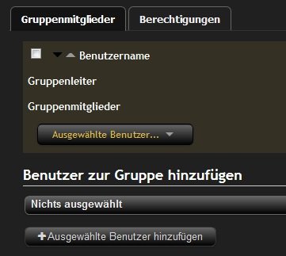

Benutzergruppen verwalten
In diesem Artikel erfahrt Ihr alles über Benutzergruppen.
Allgemeines
Mit den Benutzergruppen kann man verschiedene sachen machen.
- Bestimmte Spieler zusammen fassen und ihnen die selbe Berechtigungen geben.
- Kann man Benutzergruppen auf einer Teamseite veröffentlichen.
- Punkt 1 und 2 Kombinieren
Vorinstallierte Benutzergruppen
Mit der Installation von EQdkp, werden folgende sechs Benutzergruppen eingerichtet:
| Name | Beschreibung | Löschbar |
| Super-Administratoren | Super-Administratoren haben sämtliche Rechte | Nein |
| Administratoren | Administratoren haben nicht alle Admin-Rechte | Nein |
| Mitglieder | normale Benutzer | Nein |
| Gäste | Gäste sind nicht eingeloggte Benutzer | Nein |
| Offiziere | Offiziere dürfen z.B. Raids verwalten und eintragen | Ja |
| Redakteure | Redakteure dürfen News schreiben | Ja |
Den Namen der Gruppe und die Beschreibung könnt Ihr nach belieben ändern. Die 4 Hauptgruppen sind nicht Löschbar !!
Super-Administratoren
Die Super-Administrator-Gruppe ist eine besondere Gruppe: Mitglieder dieser Gruppe haben sämtliche Rechte im EQDKP.
Nur Superadministratoren dürfen diese Gruppe verwalten. Als Super-Administrator kann man sich auch nicht aus dieser Gruppe entfernen. Wenn du nicht mehr Super-Administrator sein willst, musst du erst einen anderen Benutzer in die Super-Admin-Gruppe aufnehmen und ihn bitten, dich zu löschen.
Auch dürfen nur Super-Administratoren bestimmte Rechte anderen Benutzer zuweisen, z.B. das Recht, Backups zu machen.
Administratoren
Mitglieder
Gäste
Mit den Gruppenrechten der Gäste-Gruppe könnt Ihr festlegen, was ein Gast (= nicht eingeloggter Benutzer) im EQDKP darf.
Offiziere
Redakteure
Gruppenrechte vs. Benutzerrechte
Trotz der Einführung von Gruppenrechten können den Benutzern auch noch Einzelrechte erteilt werden. Dabei wird ein sog. additives Rechtesystem verwendet, wobei Einzelrechte den Gruppenrechten überwiegen.
- Hat der Benutzer das Einzelrecht, überwiegt es alle Gruppenrechte
- Hat der Benutzer das Einzelrecht nicht, ist aber in einer Gruppe, die das Recht hat, so besitzt auch der Benutzer dieses Recht.
Mehr dazu unter Benutzer verwalten
Übersicht Benutzergruppen/Rechte
{kind=link}
Damit Ihr einfacher herausfinden könnt, in welche Gruppe Ihr einen bestimmten Benutzer hinzufügt, haben wir eine Übersicht geschaffen, die Euch alle Gruppenrechte anzeigt. Zu erreichen ist diese Übersicht auf der "Benutzergruppen verwalten"-Seite
Benutzergruppe Erstellen
Wenn Ihr eine neue Benutzergruppe erstellen wollt, klickt im rechten Bereich auf "+Benutzergruppe Hinzufügen" und es öffnet sich ein kleines Fenster.
{kind=link}
Dort gibt Ihr Name und Beschreibung der Gruppe ein. Desweitern habt ihr folgende Option zur Auswahl
- Versteckt Die Benutzergruppe taucht auf keiner offiziellen Liste (z.B Benutzerliste) auf.
Diese Option kann man auch nutzen um z.B mehrere Raidgruppen anzulegen die man beim erstellen eines Raids automatisch einladen/bestätigen kann.
- Auf Teamseite anzeigen Wenn Ihr wollt das diese Gruppe inklusive Member auf Eurer Teamseite auftaucht, macht auch hier ein Häckchen rein.
Im Anschluß klickt Ihr auf "Abschicken" und die neue Gruppe taucht in der Liste auf.
WICHTIG !!! Jetzt auf "Speichern" klicken
Nun Könnt Ihr der Gruppe nach bedarf auf der rechte Seite die "Standardgruppe" zuweisen. Die Standardgruppe sagt aus, daß jeder neu registrierte Benutzer automatisch dieser Gruppe angehört.
Benutzergruppe
Rechte
Eine neu erstellt Gruppe hat keine Berechtigungen und keine Benutzer
diese müßt Ihr noch zuweisen. Dazu klickt Ihr auf den Bleistift neben dem Gruppennamen und kommt automatisch in die Gruppenmitglieder
auswahl.

{kind=link}
Als erstes klickt Ihr unten auf "Nichts ausgewählt" und wählt die Benutzer, die Ihr der Gruppe hinzufügen wollt. Im Anschluß eine tiefer auf "+Ausgewählte Benutzer hinzufügen" Wenn Ihr wollt könnt Ihr dieser Gruppe auch noch einen Gruppenleiter zuordnen, in dem Ihr ein Häckchen vor seinen Namen setzt und "zum Gruppenleiter machen" wählt. Im Zweiten Reiter Berechtigungen könnt Ihr jetzt der Gruppe Benutzer- und/oder Adminrechte geben.
Seit Ihr mit dem Einrichten der Benutzergruppe fertig, solltet Ihr noch einen Blick in die Artikel Verwaltung schauen, da die neue Gruppe nicht unbedingt gleich Rechte dort haben.
Gruppenleiter
Mit dem Gruppenleiter könnt Ihr festlegen wer weitere User in diese Gruppe aufnehmen kann, ohne weitere Adminrechte zu vergeben. Ideal z.B für unterschiedliche Raidgruppen und der Raidleader kann seine eigene Gruppe auf den Stand halten.